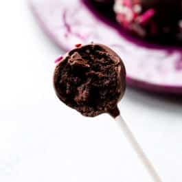

My Chocolate Cake Pop Recipe!
Introduction
Hello friends, today I will be demonstrating a chocolate cake pop recipe from a couple of simple ingredients! The experience level for this recipe is very low. I am demonstrating this lesson, because I love cake pops, and find that cake pops are mainly only sold at Starbucks for a high price for only one cake pop. So instead, you would save so much money if you made it at home. These chocolate cake pops will definitely hit the spot and are very yummy indeed.

Ingredients
- 1 cup (125g) all-purpose flour (spooned & leveled)
- 1 cup (200g) granulated sugar
- 6 Tablespoons (32g) unsweetened natural cocoa powder (⅓ cup + 1 Tbsp)
- ½ teaspoon baking soda
- ¼ teaspoon salt
- ½ cup (120mll) canola, vegetable, or melted coconut oil
- 2 large eggs, at room temperature
- 1 teaspoon pure vanilla extract
- ½cup (120ml) hot water
Chocolate Frosting
- 6 Tablespoons (85g) unsalted butter, softened to room temperature
- ¾ cup (90g) confectioners’ sugar
- ½ cup (41g) unsweetened natural or dutch-process cocoa powder
- 2–3 teaspoons heavy cream or milk
- ½ teaspoon pure vanilla extract
Coating
- 32 ounces candy melts or coating (or pure chocolate)*
sprinkles
Instructions
- Preheat oven to 350°F (177°C). Grease a 9-inch pan (round or square) or 9-inch springform pan.
- Make the cake: Whisk the flour, granulated sugar, cocoa powder, baking soda, and salt together in a large bowl. Set aside. Whisk the oil, eggs, and vanilla together in a medium bowl. Pour the wet ingredients into the dry ingredients, add the hot water, and whisk everything together until combined. Make sure there are no pockets of dry ingredients hiding.
- Pour the batter evenly into the prepared pan. Bake for 25-27 minutes or until a toothpick inserted in the center comes out clean. Allow the cake to cool completely in the pan set on a wire rack.
- Make the frosting: With a handheld or stand mixer fitted with a paddle attachment, beat the butter on medium speed until creamy, about 2 minutes. This isn’t a lot of butter and it will get stuck on the sides of the bowl, so you may need to scrape down the sides of the bowl with a rubber spatula to really help get it creamed. Add confectioners’ sugar, cocoa powder, 2 teaspoons of heavy cream/milk, and vanilla extract with the mixer running on low. Increase to high speed and beat for 3 minutes until it really comes together. Add another teaspoon of milk/cream if it looks a little too thick.
- Crumble the cooled cake into the bowl on top of the frosting. Make sure there are no large lumps. Turn the mixer on low and beat the frosting and cake crumbles together until combined.
- Measure 1 scant Tablespoon of moist cake mixture and roll into a ball. Place balls on a lined baking sheet. Refrigerate for 2 hours or freeze for 1 hour.
- Melt the coating in a 2-cup liquid measuring cup (best for dunking!). Use a microwave or you can use a double boiler and pour some at a time into the liquid measuring cup. Let the coating cool down for a few minutes before you begin dipping. If it’s too hot when you dip, the coating will crack.
- Coat the cake balls: Remove only 2-3 cake balls from the refrigerator at a time. (Keep the rest cold!) Dip a lollipop stick about ½ inch into the coating, then insert into the center or the cake ball. Only push it about halfway – ¾ through the cake ball. Dip the cake ball into the coating until it is completely covered. Make sure the coating covers the base of the cake ball where it meets the lollipop stick. Very gently tap the stick against the edge of the measuring cup to allow excess coating to drop off. Decorate the top with sprinkles and place upright into a styrofoam block or box (as explained above). Repeat with remaining cake balls, only working with some out of the refrigerator at a time. The cake balls must be very cold when dipping!
- Coating will set within an hour. Store cake pops in the refrigerator for up to 1 week.